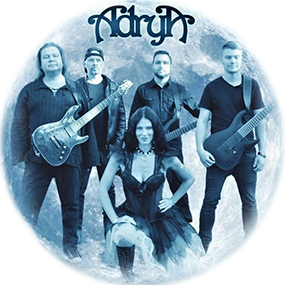

ZENE, AZ UNOVERZÁLIS NYELV
"A zene a hangok és a csend érzelmeket kiváltó elrendezése, létezésének lényege az idő. A pontos meghatározás nem könnyű, de abban általában egyetértés mutatkozik, hogy a zene a hangok tudatosan elrendezett folyamata. A zene egy művészi kifejezési forma, a hangok és „nem-hangok” (csendek) időbeni váltakozásának többnyire tudatosan előállított sorrendje, mely nem utasít konkrét cselekvésre, viszont érzelmeket, indulatokat kelt és gondolatokat ébreszt." (Forrás: Wikipédia) "...De ha zenét játszanak, a zene szíve azonnal belép a szívembe, vagy a szívem lép a zenébe. Ekkor nincs szükségünk külső kapcsolattartásra, a szív bensőséges kapcsolata elég..." (Forrás: Napfényesblog)
ZENE NÉLKÜL MIT ÉREK ÉN
A zene már gyermekkoromban életem fontos és szerves részét képezte. Első kísérletezéseimet egy elemmel működő gyermekszintetizátortal valósítottam meg, a későbbiekben pedig zongora- ill. szolfézsórákra jártam. Az énekléssel behatóbban csak gimnazista korom után kezdtem foglalkozni. A dalszerzéshez való affinitás csíráit már ovódásként érzékeltem, majd zenei tanulmányaim során és után fokozatosan kibontakoztattam. allgatóként szinte mindenevő vagyok, leszámítva azon műfajokat, amelyekben a dallam - mely nézeteim szerint a zene fő alkotóeleme - nem kap domináns szerepet. Szerzőként elsősorban a dallamos rockzene berkein belül mozgok otthonosan, de szívesen teszek kitérőket más stílusok irányába is. Mostanság leginkább a görög zene világa ejt rabul, és a nyelv elsajátítása mellett bakancslistára tűztem a görög népzenei motívumok ill. skálák tanulmányozgatását is. Cat smiley AdryA
